SIARD Suite 2.2 - Menu di SiardGui
In SiardGui sono disponibili i seguenti punti di menu:
- File / Scarica ...
- File / Scaricato da poco
- File / Carica ...
- File / Caricato da poco
- File / Apri ...
- File / Aperto da poco
- File / Salva
- File / Chiudi
- File / Mostra i metadati ...
- File / Arricchisci i metadati ...
- File / Esci
- Modifica / Copia tutto
- Modifica / Copia
- Modifica / Esporta tabella ...
- Modifica / Trova nei metadati ...
- Modifica / Riferimento successivo nei metadati
- Modifica / Cerca nei dati di tabella ...
- Modifica / Riferimento successivo nella tabella
- Strumenti / Installa ...
- Strumenti / Disinstalla
- Strumenti / Lingua
- Strumenti / Esamina integrità ...
- Strumenti / Opzioni ...
- ? / Guida
- ? / Info
I punti di menu sono disattivati, se non possono essere utilizzati nella situazione attuale. Per questo motivo all'inizio sono disponibili soltanto i comandi Scarica ... e Apri ....
File / Scarica ...
Selezionando questo punto di menu appare una finestra di dialogo nella quale possono essere immessi i dati di connessione per la banca dati.
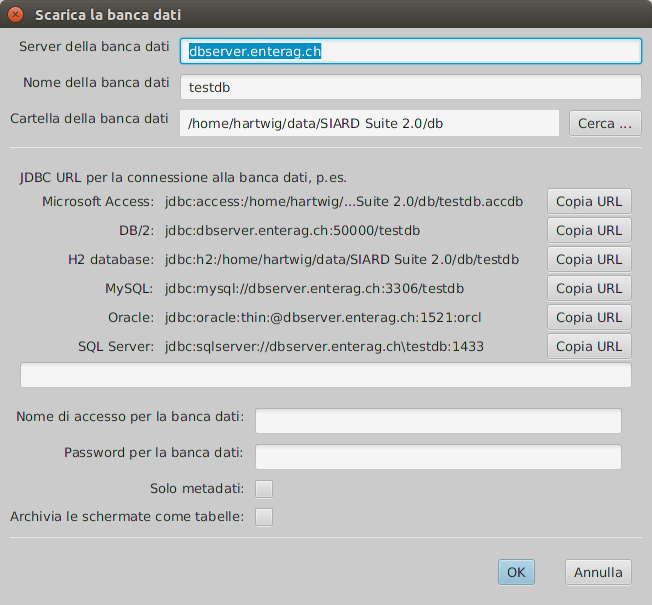Il lungo campo d'immissione testo al centro della maschera dev'essere compilato con una URL JDBC, dopo di che occorre digitare il nome utente e la sua password. Se bisogna scaricare solo i metadati (p.es. solo per farsi un'idea della dimensione della banca dati), occorre che sia cliccata la casellina "Solo metadati". Se le schermate devono essere scaricate come tabelle (p.es. se sono visibili per l'utente solo le schermate, ma non le tabelle di base), occorre cliccare sulla casellina "Archivia le schermate come tabelle".
Il nome del server, la cartella e il nome della banca dati servono solo a compilare la URL corretta per il Datenbank Management System (DBMS), ovvero il sistema di management della banca dati. Se questi valori vengono modificati, allora vengono modificate anche le URL di esempio, che vengono mostrate per ogni DBMS supportato da SIARD. Attivando il pulsante Copia URL che si trova accanto alla URL di esempio, questa viene copiata nel campo d'immissione per la URL JDBC.
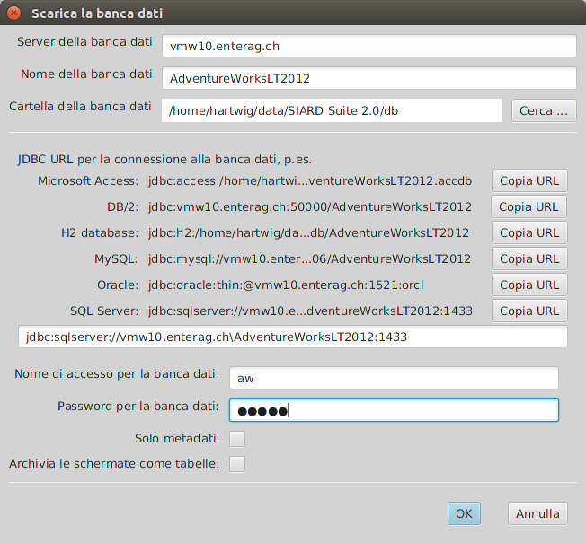Può comunque essere immessa qualsiasi stringa di caratteri come URL JDBC. In questo si può tener conto delle configurazioni di sicurezza specifiche, come l'accesso Windows oppure Kerberos. Le definizioni specifiche delle URL JDBC devono essere consultate nella documentazione del fornitore del DBMS, se gli standard qui presentati sono insufficienti (v. Sistema di gestione banche dati).
In generale non è una buona idea usare l'amministratore banca dati (DBA, root, dbo, SYSTEM, sa, dbadmin, ...) per scaricare un archivio SIARD. SIARD carica tutti i dati come se fosse una banca dati nell'archivio, alla quale l'utente banca dati attuale può aver accesso con diritti di lettura. L'amministratore banca dati può avere accesso con diritti di lettura a tutte le banche dati del DBMS e a molte tabelle di sistema, che non devono essere archiviate. Perciò è importante trovare o generare un utente adatto per l'archiviazione come descritto in Preparazione per scaricare.
Se la connessione alla banca dati non avviene, il dialogo resta visualizzato fino a quando viene immessa una URL JDBC valida o fino a quando non si preme Annulla. Se era selezionata la casellina Solo metadati, viene creato un archivio SIARD temporaneo che viene cancellato non appena il programma viene chiuso (i metadati scaricati possono però essere modificati, visualizzati ed esportati, prima di chiudere l'archivio.) Altrimenti occorre selezionare il nome e la cartella dove dev'essere allestito l'archivio SIARD.
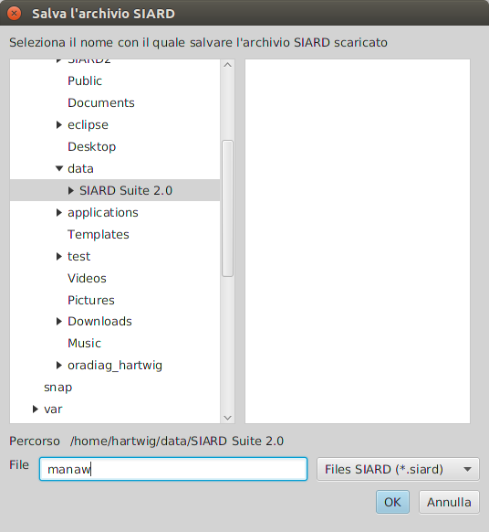Quindi il download ha inizio.
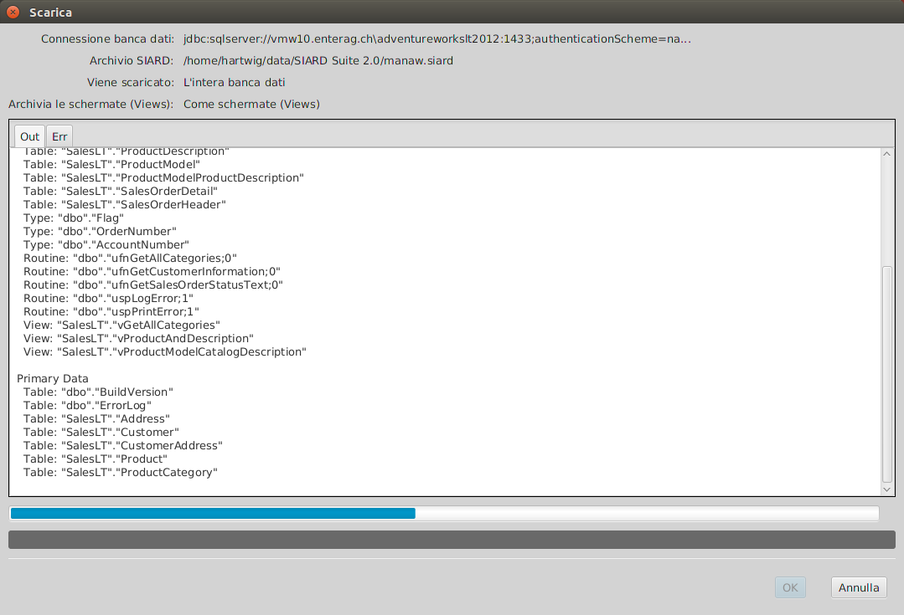Se il download è riuscito, la finestra di dialogo può essere chiusa premendo OK. I dati scaricati appaiono quindi nella finestra principale, dove dovrebbero essere immessi ulteriori metadati, almeno un nome per la banca dati, il proprietario dei dati primari dell'archiviazione e la data di creazione dei dati.
La URL JDBC appare quindi nella lista dei dati di collegamento usati di recente e potrà essere selezionata nel punto di menu descritto di seguito.
File / Scaricato da poco
Qui vengono mostrati gli ultimi dati di collegamento usati per il download. Selezionando un'iscrizione, appare una finestra di connessione già precompilata con la URL JDBC e l'utente banca dati, e occorre digitare ancora solo la password.
File / Carica ...
Selezionando questo punto di menu, appare una finestra di dialogo per poter immettere i dati di collegamento alla banca dati.
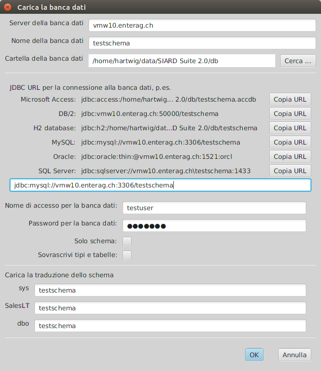La URL JDBC può essere composta e copiata alla stessa maniera dal server banca dati, dal nome della banca dati e dalla cartella della banca dati, come nella finestra di dialogo per il download. Dato che il contenuto dei files SIARD è indipendente dal DBMS, possono essere caricati anche i dati di un'istanza di un altro DBMS.
Inoltre si può definire se tipi o tabelle con lo stesso nome devono essere sovrascritte. Ciò è comunque sconsigliabile se si è connessi come amministratore banca dati con diversi diritti, è però utile se si vuole caricare ripetutamente la stessa banca dati.
Se è cliccato Solo schema, vengono creati solo gli schemi della banca dati (tipi e tabelle vuote), senza che i dati primari vengano caricati.
In basso alla finestra è riportata una lista di tutti gli schemi presenti nel file SIARD. Qui si può stabilire in quali schemi dell'istanza banca dati devono essere caricati dal file SIARD. Questi schemi devono essere allestiti prima del upload. L'utente banca dati, iscritto in questa finestra di dialogo, deve avere il diritto di creare in questi schemi tipi e tabelle. Quindi la cosa più facile è spesso quella di utilizzare un amministratore banca dati che abbia tutti i diritti di scrittura.
Nel caso in cui il DBMS non supporti alcuna UDTs o ARRAYs, i dati saranno caricati "spianati", ovvero ogni UDT o ARRAY viene caricato creando per ogni componente una colonna separata.
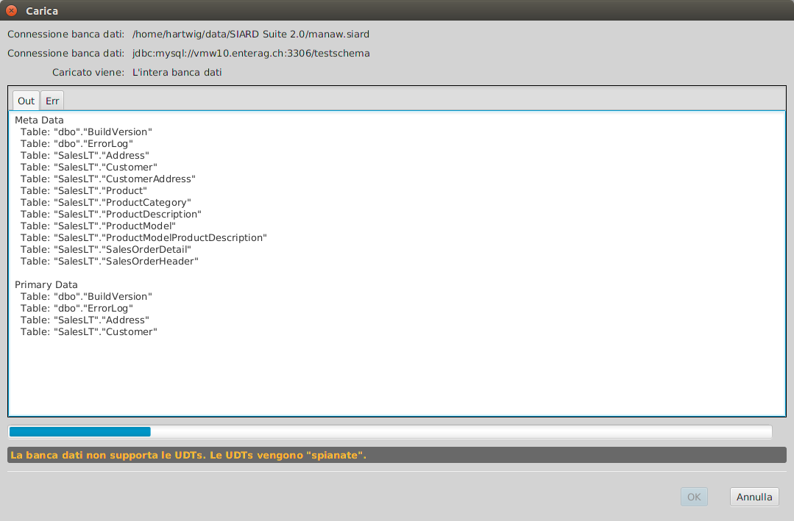Se i tipi e le tabelle vengono create e i dati primari caricati, allora il upload è avvenuto con successo. E' possibile che alcuni tipi e tabelle siano state rinominate, a causa delle limitazioni di lunghezza nel sistema di destinazione. In questi casi il suffisso soppresso di un lungo nome viene sostituito da un numero.
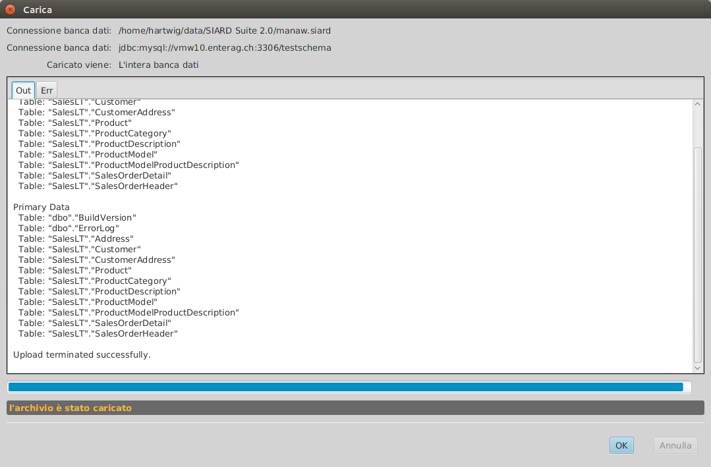Solo alla fine del upload si cercherà di attivare le limitazioni (univocità, riferimenti), cosa che comunque potrebbe fallire, in quanto diverse DBMS seguono regole più severe diverse dallo standard SQL:2008. Questo fallimento viene notificato nella scheda Err della finestra di dialogo del upload.
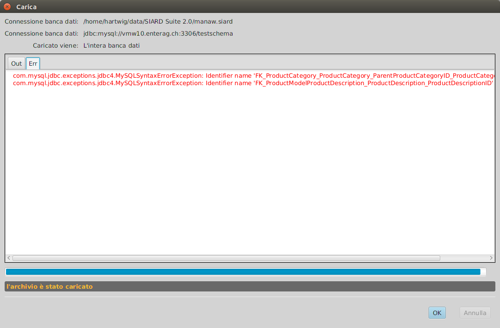Se il download è riuscito, l'URL JDBC viene elencata in una lista dei dati di collegamento utilizzati di recente, che può essere selezionata nel seguente punto di menu.
File / Caricato da poco
Sotto questo punto di menu sono disponibili le URS JDBC di collegamento usate di recente per il caricamento di banche dati. Selezionandone una, si apre la finestra di dialogo di collegamento con la URL JDBC e i dati utenti corrispondenti. Occorre quindi completare con la password e l'assegnazione dello schema.
File / Apri ...
Cliccando su questo punto di menu, appare una lista nella quale si può selezionare un file SIARD già esistente, il quale viene aperto nella finestra principale, dove sarà possibile modificare e completare i metadati. I dati primari possono essere visualizzati.
Se un file SIARD viene aperto o scaricato, il nome viene elencato nella lista dei file usati di recente, e può essere selezionato nel punto di menu seguente.
File / Aperto da poco
Per selezionare un file aperto di recente e aprirlo nella finestra principale.
File / Salva
Se i metadati di un file SIARD vengono modificati, questi vengono salvati sul supporto di memoria, solo su richiesta esplicita.
I file SIARD temporanei, creati tramite il download con l'opzione Solo metadati, non possono essere salvati. I vostri metadati possono però essere visualizzati, modificati ed esportati prima di chiudere il file.
File / Chiudi
Dopo aver chiuso un archivio SIARD, se ne può scaricare o aprire un altro.
File / Mostra i metadati ...
Selezionando questo punto di menu, i metadati dell'archivio SIARD nella finestra principale possono essere visualizzati come documento HTML leggibile.
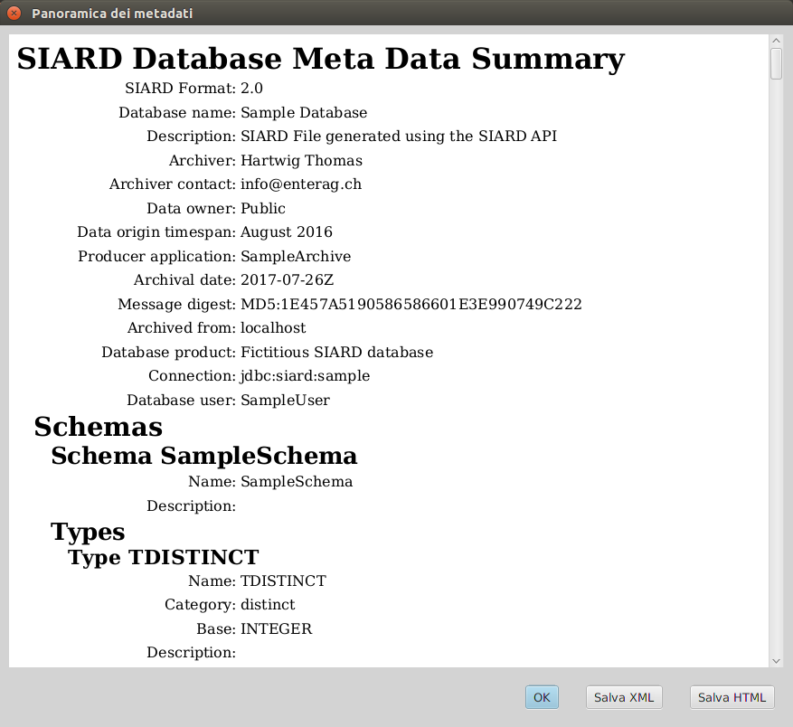Viene visualizzata una versione HTML dei metadati, che è stata generata con il file XSL attualmente creato (XML Stylesheet) dalla XML metadati. Come standard si applica una semplice trasformazione etc/metadata.xsl, mentre altre trasformazioni XLS, più elaborate, possono essere selezionate in un file HTML sotto Strumenti / Opzioni.
I metadati originali XML possono essere salvati come file esterno tramite il pulsante Salva XML. Premendo invece il pulsante Salva HTML, viene salvato il file HTML trasformato, generato tramite la trasformazione XSL dai metadati XLM originari.
File / Arricchisci i metadati ...
I metadati salvati esternamente possono essere molto utili, se la stessa banca dati viene di nuovo archiviata in un secondo momento, dato che non sarà più necessario immettere di nuovo tutte le descrizioni di tabelle e colonne, ma basterà arricchire l'archivio SIARD con i metadati salvati esternamente, che contengono queste descrizioni.
Dopo aver selezionato un file con dei metadati XML per arricchire l'archivio SIARD attualmente visualizzato, tutte le descrizioni vengono copiate, dove i nomi degli oggetti della banca dati (schema, tabella, colonna, ...) corrispondono. Quindi, se la banca dati attuale differisce lievemente nella struttura dalla banca dati documentata nei metadati, la maggior parte delle descrizioni viene comunque ripresa.
File / Esci
Selezionando questo punto di menu, un archivio SIARD eventualmente aperto viene chiuso e il programma terminato.
Modifica / Copia tutto
Selezionando questo punto di menu, la tabella, indicata in basso a destra sotto i metadati, viene copiata negli appunti. Questa può essere una lista di suboggetti o un estratto dei dati primari.
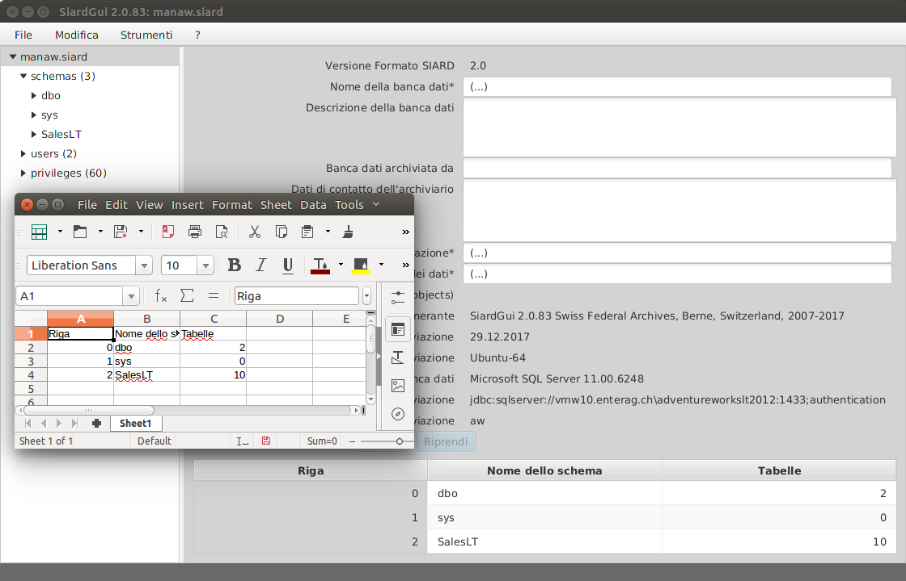Il contenuto degli appunti può essere inserito e incollato in qualsiari altra applicazione in grado di rappresentare testo o dati tabellari. Le celle della tabella sono separate da tabulatori, motivo per cui inserendo il contenuto degli appunti in una tabella MS Excel o LibreOffice Calc, si genera una buona copia tabellare.
Modifica / Copia
Questo punto di menu può essere selezionato se si clicca su una cella della tabella. Selezionandolo, vengono copiate negli appunti singole righe della tabella, che quindi conterrà la cella scelta.
Modifica / Esporta tabella ...
Qualche volta è comodo poter elaborare un'intera tabella in un'altra applicazione. A questo scopo si può esportare l'intera tabella come file HTML, che contiene essenzialmente soltanto una tabella.
Come formato per l'esportazione è stato scelto l'HTML, perché può essere aperto come un file CSV in MS Excel o LibreOffice Calc, evitando però alcuni punti deboli propri del formato CSV, consentendo cosi tabelle per valori UDT e links su dati esterni per valori Large Object (CLOB, BLOB, XML, ...).
Selezionando questo punto di menu, il file HTML dev'essere specificato con l'ausilio di un selettore di file. I valori Large Object vengono salvati in una speciale cartella LOB, modificabile sotto Strumenti / Opzioni ....
Modifica / Trova nei metadati ...
Se la banca dati contiene molte tabelle e colonne, è spesso difficile trovare di nuovo un valore specifico di metadati. Con l'aiuto di questa funzione si possono invece trovare tutti i metadati che contengono una stringa di caratteri.
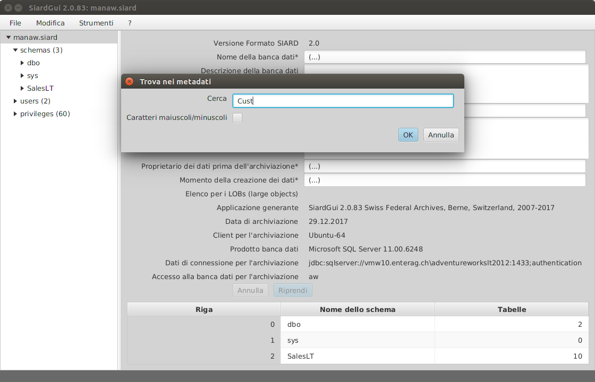
Modifica / Riferimento successivo nei metadati
Con questo punto di menu o con Shift-F3, si possono cercare tutti i riferimenti della stringa di caratteri.
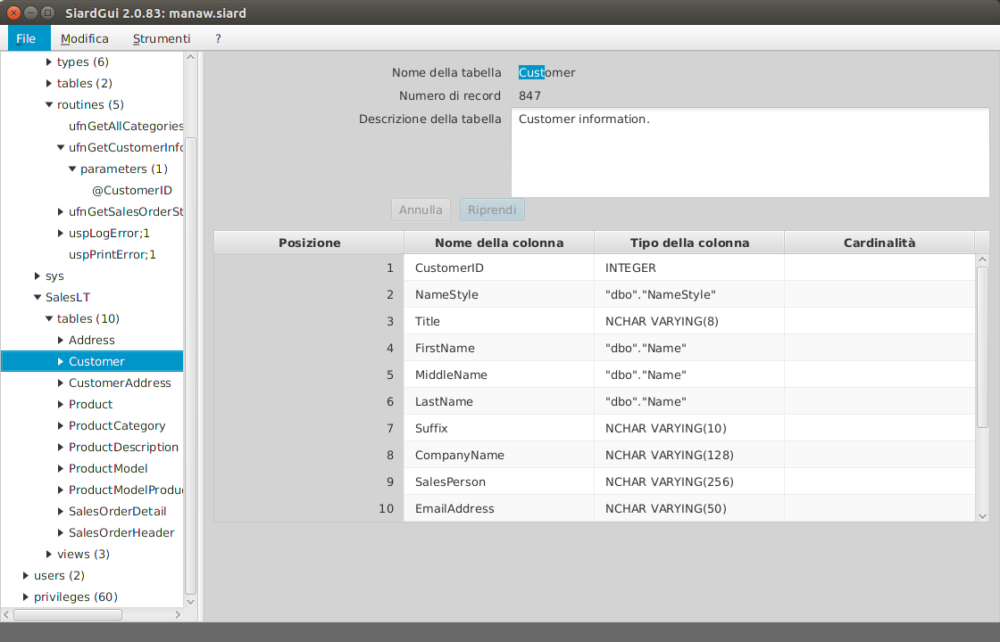
Modifica / Cerca nei dati di tabella ...
In maniera analoga, è spesso auspicabile, poter cercare i dati primari di una tabella per stringa di caratteri.

La finestra di dialogo per inserire una catena di caratteri è un po' complessa. La ricerca è limitata alle colonne semplici e si può scegliere una quantità parziale di queste colonne semplici. La ricerca è una semplice ricerca di testo (numeri e dati vengono trattati come testo che viene mostrato nella tabella) e viene eseguita sequenzialmente in tutta la tabella, e può durare più a lungo nel caso di tabelle grandi. E' possibile accellerare la ricerca o cercare in grandi o complessi valori di dati (CLOB, BLOB, XML, UDT, ARRAY, ...), caricando l'archivio SIARD in un'istanza DBMS e utilizzando SQL per l'interrogazione.
Modifica / Riferimento successivo nella tabella
Con questo punto di menu o F3, viene visualizzato il riferimento successivo della stringa di caratteri cercata.
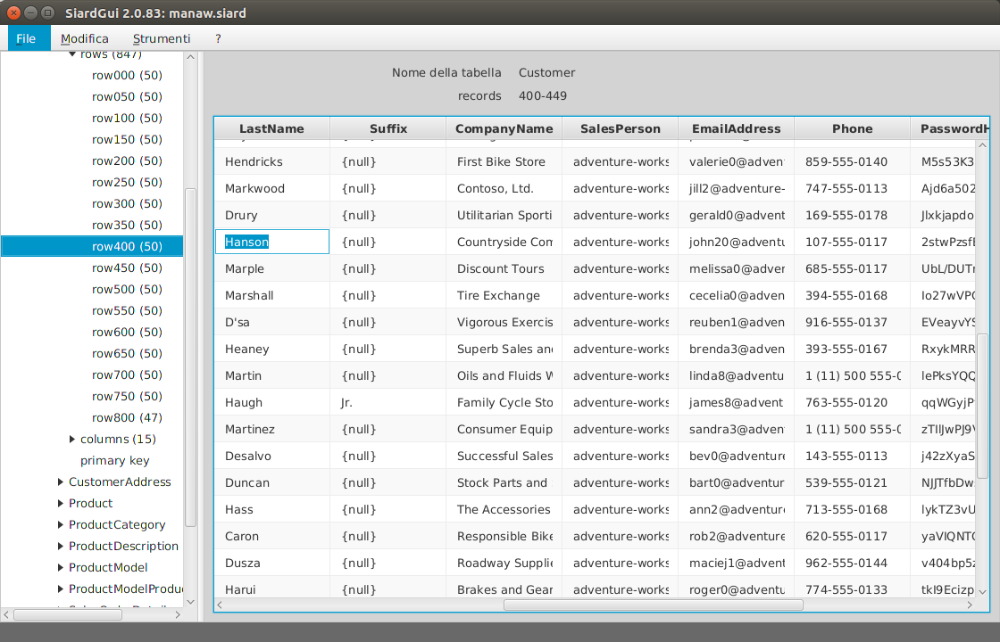
Strumenti / Installa ...
Come già descritto nel capitolo Installazione, SIARD Suite può essere installato in qualsiasi momento, se ancora non esiste alcuna versione installata o se la versione installata ha un numero di versione inferiore a quella attualmente avviata.
Strumenti / Disinstalla
Un'installazione di SIARD Suite può essere eliminata selezionando questo punto di menu. Prima della disinstallazione viene chiesto all'utente se vuole cancellare anche le impostazioni personali di SIARD Suite o se devono essere memorizzate per installazioni future di SIARD Suite.
Strumenti / Lingua
Qui può essere selezionata una delle lingue supportate dall'interfaccia utente.
Strumenti / Esamina integrità
Se l'archivio SIARD contiene un Message digest sui dati primari, questo può essere ricalcolato di nuovo tramite questo punto di menu e confrontato con il valore memorizzato.
SIARD Suite calcola il Message Digest immediatamente dopo il primo download e lo salva nei metadati. Se l'archivio SIARD è stato decompresso (unzippato) e i dati primari sono stati modificati, l'esame dell'integrità fallisce.
E' però facile per altri programmi, modificare i dati primari e salvare i relativi Message Digest nei metadati. L'esame dell'integrità dimostra quindi al massimo che nessun dato primario è stato modificato a mano.
Una migliore garanzia dell'autenticità dei dati archiviati, consiste nel salvare tutti i Message Digests generati durante il download in una banca dati separata e severamente controllata. Quindi il Message Digest, salvato in precedenza nei metadati, dovrebbe essere confrontato di volta in volta con quello della banca dati esterna. Solo se questo è rimasto invariato, l'esame dell'integrità qui disponibile può essere assunta come prova che i dati primari non sono più stati modificati dopo il download.
Strumenti / Opzioni ...
Questo dialogo permette di modificare alcuni dati personali di configurazione. Se questi vengono modificati in un'istanza di SIARD Suite, saranno allora salvati nelle impostazioni personali al momento della chiusura del programma, altrimenti restano validi solo per la seduta attuale.
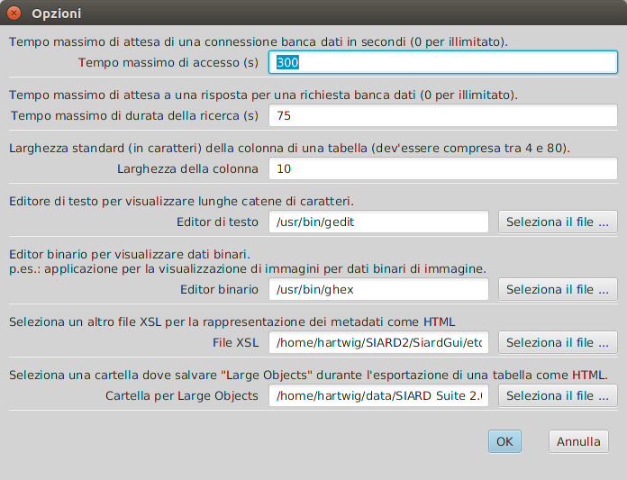
? / Guida
Questo punto di menu visualizza il presente manuale.
? / Info
Questo punto di menu visualizza l'impressum di SIARD Suite.